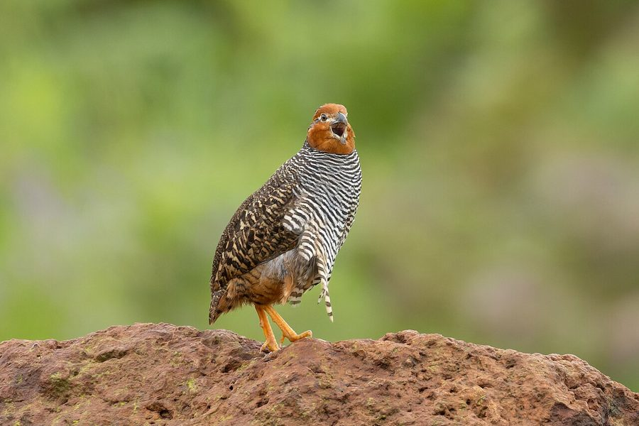

लोवाJungle Bush Quail
Perdicula asiatica · Phasianidae · BRD-0359

- Scientific name वैज्ञानिक नाम
- Perdicula asiatica (Latham, 1790)
- Family कुल
- Phasianidae
- Hindi हिंदी
- लोवा
- Local names स्थानीय नाम
- lowa, jungle bush quail
- Status here यहाँ की स्थिति
- native
- Movement आवागमन
- Resident, here all year
- Known from कहाँ दर्ज
- Others have published records from the Basti–Ayodhya districts बस्ती–अयोध्या के ज़िलों से दूसरों के प्रकाशित अभिलेख
- IUCN IUCN
- LC
- Review समीक्षा
- not yet reviewed
When to look कब देखें
Present all year. साल भर मौजूद।
Tell it apart from इनसे अलग पहचानें
लोवा / Jungle Bush Quail
Perdicula asiatica (Latham, 1790) — Phasianidae
लोवा — झाड़ियों और खेतों की मेड़ों पर रहने वाली एक छोटी, फुर्तीली जंगली बटेर। बेकर (1928) के अनुसार नर का माथा, भौंह और गला गहरा कत्थई-लाल होता है, सीने पर काली और सफेद धारियां होती हैं तथा पीठ भूरी व धारियों वाली होती है; मादा का सीना हल्का बादामी होता है। यह सुबह और शाम खेतों में घास के बीज, छोटा अनाज और कीड़े खाती है।
Quick Identification त्वरित पहचान
| Feature | Description | |
|---|---|---|
| Habit | Small, plump terrestrial bush-quail moving in coveys through dry scrub and crops | |
| Size | Very small gamebird, smaller and more compact than the [[grey_francolin | Grey Francolin]] |
| Male Head | Forehead, supercilia, chin, cheeks, and throat rufous-chestnut; white line above supercilium (Baker 1928, p. 377) | |
| Male Underparts | Lower parts below the throat closely barred black and white; vent and under tail-coverts rufous (Baker 1928, p. 377) | |
| Female Plumage | Upper plumage like male; underparts dull vinaceous or lilac-rufous, lacking black-and-white barring (Baker 1928, p. 378) | |
| Soft Parts | Iris light to dark brown; bill slaty-black, reddish at base; legs dull yellowish to orange (Baker 1928, p. 377) |
Field tip: Look for coveys of small bush-quails in dry scrub and crops, displaying rufous throats in males (Baker 1928).
हिंदी:
नर का गला लाल-कत्थई और सीना काली-सफेद धारियों वाला होता है; मादा का सीना सादा बादामी होता है; ये झाड़ियों में झुंड में रहती हैं (बेकर 1928)।
Morphology आकारिकी
Measurements as given by Baker (1928):
| Measurement | Range |
|---|---|
| Biometrics | Total length about 165 to 175 mm. ; wing 77 to 92 mm. ; tail 35 to 40 mm. ; tarsus 28 to 29 mm. ; culmen about 10 mm. (Baker 1928 as Perdicula asiatica asiatica) |
The Jungle Bush Quail is a compact, short-tailed phasianid with bold ventral barring in adult males. Stuart Baker (1928, p. 377) described the adult male: "Forehead, supercilia, chin, cheeks, anterior ear-coverts and throat rufous-chestnut ; posterior ear-coverts brown ; a broken white line above the supercilium ; crown brown, bordered with black and more or less barred with the same ; sides of neck, back, rump and upper tail-coverts fulvous-brown, with narrow wavy black bars and the back with narrow whitish shaft-lines also... below from the throat barred black and white ; vent, thighs and under tail-coverts rufous, vinous-rufous or rufous-buff."
The female resembles the male above but lacks the pale central streaks, and has the lower parts dull vinaceous or lilac-rufous (Baker 1928, p. 378). Soft parts: iris light to dark brown; bill slaty-black, reddish at base; legs dull yellowish to yellowish-orange (Baker 1928, p. 377).
हिंदी:
बेकर (1928) के अनुसार इसकी कुल लंबाई लगभग 165 से 175 मिमी, पंख 77 से 92 मिमी, पूंछ 35 से 40 मिमी, टार्सस 28 से 29 मिमी और कल्मेन 10 मिमी होता है। नर का सीना काली-सफेद धारियों से भरा होता है।
Behaviour & Ecology व्यवहार और पारिस्थितिकी
Stuart Baker (1928, p. 378) noted that it is resident "from the plains up to some 5,000 feet, frequenting thin dry jungle of almost any kind from grass and scrub round about villages to fairly thick deciduous forest."
Baker (1928, p. 378) observed: "They are very sociable and, as soon as the eggs hatch, two or three families join forces, the cocks being perfectly friendly although most determined little fighters in the early part of the breeding-season." Their ordinary call was syllabified by Butler as a whistled "tiri-tiri-tiri", though challenging cocks produce a variety of cackling notes (Baker 1928, p. 379).
हिंदी:
बेकर (1928) के अनुसार यह झाड़ीदार जंगलों और गांवों के आसपास घास में रहती है। प्रजनन के बाद कई परिवार मिलकर झुंड बना लेते हैं। इसकी सीटी जैसी बोली 'तिरी-तिरी-तिरी' होती है।
Life Cycle / Phenology जीवन चक्र
Stuart Baker (1928, p. 378) recorded that the Jungle Bush Quail breeds from September to the end of February, with a few birds laying in August.
Baker (1928, p. 378) described the nest as "a mere scratching in the soil beneath a bush, tuft of grass or other cover, but it is always well lined with grass by the birds." Sites selected are in long grass, thin scrub, or standing crops of millet; it avoids completely bare desert places (Baker 1928, p. 378).
हिंदी:
बेकर (1928) के अनुसार यह सितंबर से फरवरी के बीच झाड़ियों या बाजरे के खेतों में जमीन पर घास से बिछा हुआ घोंसला बनाती है।
Host Plants or Prey आहार
Stuart Baker (1928, p. 378) recorded: "They feed morning and evening in the cultivated fields and grass-lands, chiefly on grass-seeds but also on many other kinds of seeds, small grain and insects."
हिंदी:
बेकर (1928) के अनुसार यह सुबह और शाम खेतों तथा घास के मैदानों में मुख्य रूप से घास के बीज, छोटा अनाज और कीड़े खाती है।
Predators / Natural Enemies शत्रु
No source opened for this atlas names a specific predator of this bird.
हिंदी:
इस एटलस के लिए खोले गए किसी भी स्रोत में इस पक्षी के किसी विशिष्ट शिकारी का नाम नहीं है।
Agricultural / Human Relevance कृषि प्रासंगिकता
No source opened for this atlas describes this bird's dealings with people. Protected under the Wildlife (Protection) Act, 1972.
हिंदी:
इस एटलस के लिए खोले गए किसी भी स्रोत में लोगों के साथ इस पक्षी के व्यवहार या संबंधों का विवरण नहीं है। यह वन्यजीव (संरक्षण) अधिनियम, 1972 के तहत संरक्षित है।
Expected Locally स्थानीय रूप से अपेक्षित
Not a field record. Written from published accounts for eastern Uttar Pradesh. No confirmed local sighting yet — if you have seen it, that is what the atlas needs.
अभी तक स्थानीय पुष्टि नहीं। यह विवरण प्रकाशित स्रोतों से है, किसी अवलोकन से नहीं।
GBIF places two records in Ayodhya (Faizabad) district, but both are labelled only 'Oudh', the whole province (an observation of 1857–1860 and one of August 1923), so they fix no place in it. It holds none from Basti.
In eastern and northern Uttar Pradesh, published records are based on historical museum specimens in the Natural History Museum, London, collected at Agoree in Mirzapur in 1869 and 1969 and at Maddupur in Chandauli in 1879, and GalliForm survey records from Dudhwa National Park in Lakhimpur Kheri in 1992–1993. On GBIF, records labelled vaguely as 'Oudh' or with Lucknow as 'Lowa' refer to provincial records or the Hindi vernacular name rather than specific district localities.
A first record would be a photograph of the bird with place and date, sent through the About page.
Distribution वितरण
Stuart Baker (1928, p. 378) recorded the distribution: "In well-wooded localities from the Himalayas to Ceylon... it is common in the Deccan to the South and East of the North-West Provinces and extends East to Behar, Western Bengal and Orissa."
In Uttar Pradesh, historical specimens document its occurrence in the southern Vindhyan hill tracts of Mirzapur and Chandauli, and a GalliForm record from Dudhwa National Park (1992–1993) places it in Lakhimpur Kheri.
हिंदी:
बेकर (1928) के अनुसार इसका वितरण हिमालय से लेकर दक्षिण भारत और बिहार व बंगाल तक है। उत्तर प्रदेश में इसके ऐतिहासिक नमूने मिर्जापुर और चंदौली से हैं, और दुधवा (लखीमपुर खीरी) से 1992–1993 का एक रिकॉर्ड है।
Research Questions शोध प्रश्न
- Does the Jungle Bush Quail persist in remnant thorn scrub and ravines along the southern Purvanchal tract? / क्या यह बटेर दक्षिणी पूर्वांचल की कटीली झाड़ियों और बीहड़ों में अभी भी पाई जाती है?
- What are the primary grass seed species consumed in cultivation margins adjacent to Terai sal forest? / तराई के साल वनों से सटे खेतों में यह मुख्य रूप से किन घासों के बीज खाती है?
- How do covey home ranges shift between the monsoon post-breeding season and the dry pre-summer period?
- What is the impact of mechanized grain harvesting on the availability of fallen seed forage for bush quail coveys?
- Can rural naturalists record early morning whistled calls along scrub borders? (Villagers can note the distinctive 'tiri-tiri' whistle near dry field edges at dawn.)
Similar Species मिलती-जुलती प्रजातियाँ
| Species | How to tell apart | हिंदी | |
|---|---|---|---|
| [[common_quail | Common Quail]] (Coturnix coturnix) | Larger size, sandy-buff plumage with anchor-mark on male throat, lacking dense black-and-white ventral barring | बटेर |
| [[rain_quail | Rain Quail]] (Coturnix coromandelica) | Solid black breast patch in males, unbarred pale flanks with black streaks, and lacking rufous-chestnut throat | चीना बटेया |
| [[barred_buttonquail | Barred Buttonquail]] (Turnix suscitator) | Yellow eyes, blue-grey bill, three toes only (no hind toe), and black throat patch in females | गुंडलू |
| [[grey_francolin | Grey Francolin]] (Francolinus pondicerianus) | Much larger gamebird, finely barred grey-brown body with black-bordered rufous throat and upright stance | तीतर / सफ़ेद तीतर |
Field rule: The rufous-chestnut throat and face combined with close black-and-white zebra barring across the lower breast distinguish the male Jungle Bush Quail from all other Indian quails (Baker 1928).
हिंदी:
साधारण बटेर के सीने पर काली धारियाँ नहीं होतीं; लोवा के नर का गला लाल-कत्थई और पूरा सीना काली-सफेद धारियों से ढका होता है।
Taxonomy & Classification वर्गीकरण
Original description. Described by John Latham in 1790 in Index Ornithologicus (Vol. 2, p. 649), under the basionym Perdix asiatica. The type locality is Mahratta region, India.
Synonyms and historical names. Stuart Baker (1928, p. 377) and Blanford and Oates placed the species in Perdicula (Perdicula asiatica). Baker's argoondah (Rock Bush-Quail) is treated today as the distinct species Perdicula argoondah.
Subspecies. Stuart Baker (1928, p. 377) treated the nominate subspecies as Perdicula asiatica asiatica, which inhabits northern and central India east to Bihar and Bengal.
Family and order placement. Order Galliformes, family Phasianidae (partridges and quails), genus Perdicula.
IUCN status rationale. Evaluated as Least Concern (LC) by the IUCN Red List (BirdLife International 2018).
हिंदी:
जॉन लैथम ने 1790 में इसका वर्णन किया था। यह फैसिआनिडी (तीतर-बटेर) कुल का सदस्य है और संकटमुक्त (LC) है।
Photo Gallery फोटो गैलरी
No photos yet — add field photos to media/species/jungle_bush_quail/ and run node scripts/sync_photos.js.
Photos needed आवश्यक फोटो
- [ ] Adult male showing rufous throat and barred underparts in scrub cover (झाड़ियों में बैठा नर जिसका लाल गला और धारीदार सीना दिखे)
- [ ] Covey foraging quietly near field border (खेत की मेड़ पर दाना चुगता बटेरों का झुंड)
References संदर्भ
- Latham, J. (1790). Index Ornithologicus, Sive Systema Ornithologiae. Vol. 2. Leigh & Sotheby, Londini, p. 649 (as Perdix asiatica).
- Baker, E. C. S. (1928). The Fauna of British India, Including Ceylon and Burma. Birds. Vol. 5. 2nd ed. Taylor & Francis, London, pp. 377–379 (as Perdicula asiatica asiatica).
- Ali, S. & Ripley, S. D. (1987). Compact Handbook of the Birds of India and Pakistan. 2nd ed. Oxford University Press, New Delhi.
- Grimmett, R., Inskipp, C. & Inskipp, T. (2011). Birds of the Indian Subcontinent. 2nd ed. Christopher Helm, London.
- Rasmussen, P. C. & Anderton, J. C. (2012). Birds of South Asia: The Ripley Guide. 2nd ed. Smithsonian Institution and Lynx Edicions, Washington, D.C. and Barcelona.
- BirdLife International (2018). Perdicula asiatica. The IUCN Red List of Threatened Species 2018: e.T22678997A131873750. doi:10.2305/IUCN.UK.2018-2.RLTS.T22678997A131873750.en
- GBIF Occurrence Data — Perdicula asiatica, India (2025).
Source file: species/fauna/birds/jungle_bush_quail.md